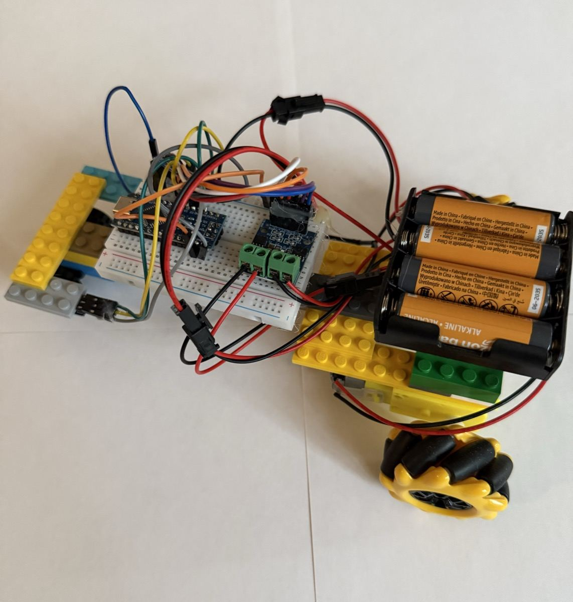
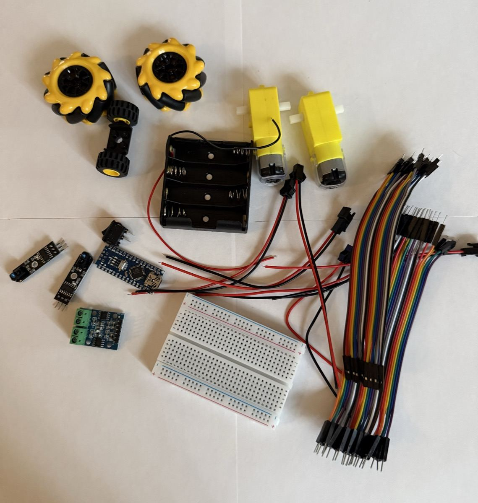
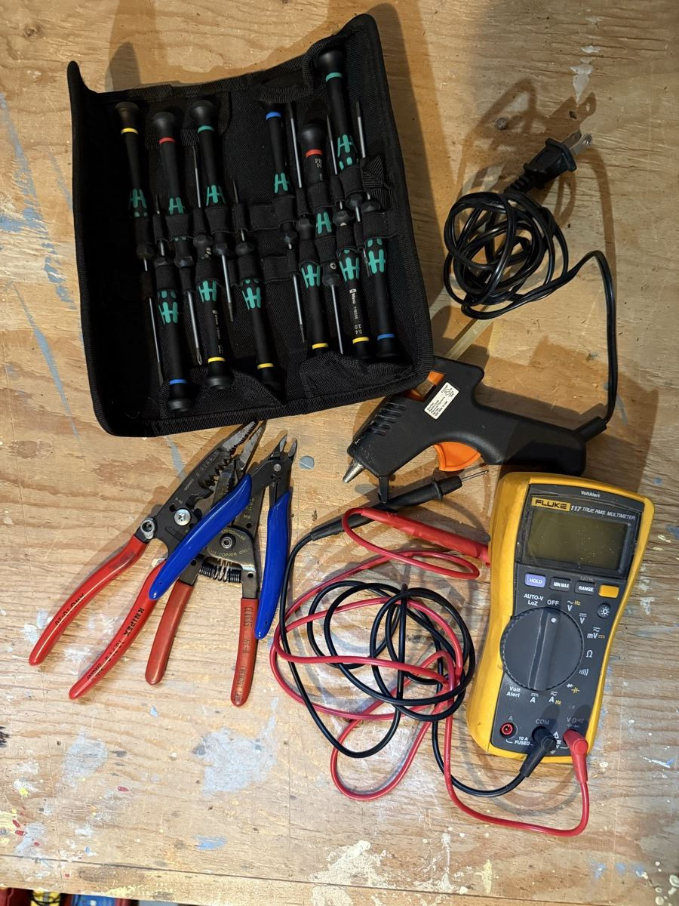

In this hands-on class, each child builds their own line-following robot - a small vehicle that uses sensors to "see" a line on the ground and steer itself along it. Kids use the provided LEGO pieces to build the frame of the vehicle, then bring it to life with real electronic components including:
Along the way, the kids will learn basic electronics, how to troubleshoot when something doesn't work, and the process of taking an idea, hardware, and software and turning it into something that works. They'll also learn how to change the program to change how the robot behaves, and how to keep experimenting with the design and the program at home.
The goal is for every child to leave with an understanding of how their vehicle works and all the resources they need to keep experimenting at home on their own (or with a parent's help).
A look at the line-following robot, the kit of parts each child gets to keep, and some of the tools they'll use.



Real engineering skills, taught hands-on, with a robot of their own to keep experimenting with.
How motors, sensors, switches, and batteries connect on a breadboard — and what each part does to make the robot move.
How a microcontroller is programmed to read its sensors and steer the motors, and how to change the program to change how the robot behaves. (Note - code will all be provided, no coding or computer experience is required.)
What to do when something doesn't work: checking connections, testing one piece at a time, and thinking like an engineer to find and fix the problem.
Our first STEM & Robotics program — a one-time, 3-hour workshop organized by County Kids Club.
The Robotics Workshop is led by two instructors, so every child gets hands-on help building, wiring, and programming their robot.
Common questions about the workshop.
The Robotics Workshop is just the start. We're building more STEM programming for kids in Prince Edward County, and rather than deciding what we think families want, we'd like to build it based on what you want to see.
Whether your child is interested in robotics, coding, engineering, science experiments, nature, or other STEM activities, we'd love to hear what excites them.